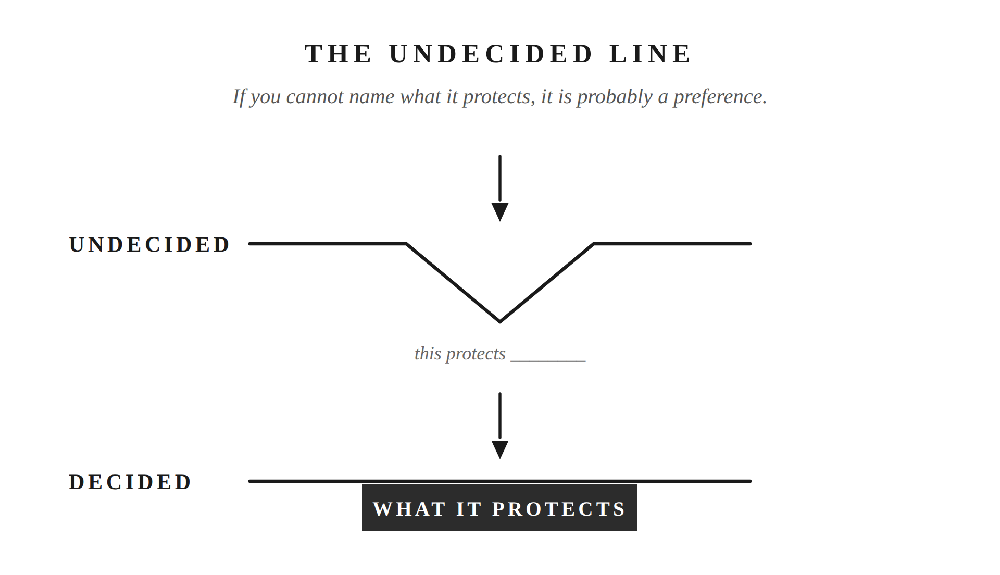

There are rules in your marriage nobody ever wrote down. You’d defend them anyway. Ask what one of them is actually for and most men come up empty.
Epictetus spent his early life as a slave and the rest of it running a school. His handbook, the Enchiridion, is a short field guide to living, and its thirty-third section opens by telling you to settle that question early, before anyone is watching.
“Immediately prescribe some character and some form to yourself, which you shall observe both when you are alone and when you meet with men.”
Take the old language off and it’s this. Decide what kind of man you are before you walk into the room. Then be that man, whether anyone’s watching or not.
You already know how this works. You decided what you’d eat before you got hungry. You decided what time you’d get up before the alarm went off. So when did you last do that about your marriage?
A boundary is a line you don’t cross, and one you don’t let anyone else cross either. That’s all it is. Not a mood, not a rule you invent when you’re annoyed. A line, decided ahead of time, that holds when somebody leans on it.
You have them already. You have boundaries on money. You have boundaries on your kids. You have boundaries on your marriage. You have boundaries on family. Most of them you’ve never said out loud, to your wife or to yourself.
Those lines are what the marriage is built on. Take them away and it doesn’t get warmer or easier. It just stops holding its shape.
And setting a boundary isn’t unkind. Brené Brown, who studies how people handle hard conversations, puts it as clear is kind, unclear is unkind. She says she picked it up in a twelve-step meeting years before she ever wrote it down. Being vague about where your lines are isn’t generosity. It just makes the other person guess.
First you need a way to tell a real line from a fake one.
A boundary protects something you can name. A preference is something you want. That’s the whole difference, and it decides whether the rule survives the first person who pushes on it.
Take the money one. What is it protecting? Not what it stops. What it protects. If the answer is that you don’t like being surprised, that’s a preference. If the answer is the savings, or the house you’re working toward, or the two of you making big calls together, that’s a boundary. Most men have never answered that question out loud, and that’s exactly why the rule folds when somebody leans on it hard enough. There was nothing underneath it.
Run it on a second one. You don’t let friends complain about your wife to you. What is that protecting? It isn’t your comfort. It’s her standing with the people around you, which is yours to look after whether she ever finds out you did it or not. Now you can hold the line, because you know what you’re holding it for.
Naming it does something else, too, and this is the part most men never get to. It changes the argument you have with your wife.
When the two of you disagree about a rule, you argue about the rule, and that argument has nowhere to go. Nobody ever won “no screens after dinner.” But if you can both say what it’s for, you’re having a different conversation entirely: is this actually what our kids need right now? She might think you’re wrong about the screens and agree with you completely about the kids. That’s two people working on the same problem. The other version is two people defending positions.
So you don’t need her to agree about the rule. You need the two of you aligned on what you’re protecting. Get that part right and the rule mostly sorts itself out.
The test also keeps you from becoming a different kind of problem. A man who holds firm on everything isn’t strong. He never did the work of deciding what was worth holding. So he treats every hill the same, and everyone around him has learned to stop asking. What doesn’t bend is the line. How you say it, when you say it, how much grace you give the person leaning on you: all of that can flex, and should.
Karl Pillemer interviewed seven hundred people who’d been married thirty years or more about what puts the most strain on a marriage. In-laws, money, and the way two people speak to each other all came up.
Start closest in, with the lines between the two of you.
Mine are simple, and I suspect yours would be too if you wrote them down. We don’t get physical. I don’t call my wife names. Neither of us speaks poorly about the other one to friends or family. That’s the whole list.
The specific rules matter less than you’d think. Another couple’s list would look different and work fine. What matters is that the list holds, and holds is a word that only means something under pressure.
What the list protects is the part of a marriage that doesn’t repair. People keep things. If you call your wife something ugly at eleven at night, she will still have that sentence five years from now, long after you’ve both forgotten what the fight was even about. If it ever gets physical, she keeps that for good, and so does the marriage. Some things don’t wash out. The list is there so the worst night the two of you ever have still leaves a marriage standing in the morning.
Three things will lean on it.
The first is anger. It’s easy to keep a line on a Tuesday when nothing’s wrong. It’s a different thing at eleven at night in the middle of something that’s gone sideways, when you’ve got the sentence loaded and you know exactly where it would land. That sentence is available to you. It always is. Not using it is the entire job.
The second is company. Somebody starts in about their wife, and there’s a seat open next to them, and it costs nothing to sit down. Think of your friend’s picture of your wife as a cup. Everything you say about her pours something in. It doesn’t drain back out. Months later he won’t remember the complaint. He’ll still have the picture you gave him, and he’ll be a little colder to her than he would have been, and he won’t know why. It runs both directions. He doesn’t get to fill your cup either. A friend telling you something hard and true about your own marriage is a gift. A friend complaining about her to you is a different thing, and you can feel the difference while it’s happening.
The third one is the hardest, and most men have no answer for it. Sometimes you hold the line and she doesn’t. She’s tired, or she’s had a week you wouldn’t wish on anyone, and something comes out of her that’s on the list. Now what?
Epictetus answered that one a few sections earlier in the Enchiridion.
“Is a certain man your father? In this are implied taking care of him, submitting to him in all things, patiently receiving his reproaches, his correction. But he is a bad father. Is your natural tie, then, to a good father? No, but to a father.”
He’s talking about a son and a hard parent, and the reasoning carries straight over. What you owe comes from the relationship, not from the other person’s scorecard. You’re not her husband on the condition that she has a good week. That was never the deal, and if it were, it wouldn’t be a boundary. It’d be a trade.
A trade is void the moment the other side stops paying. A boundary isn’t, because it was never a payment. It’s who you said you’d be.
You hold it anyway.
Money is the clearest case, because the line is a number and the pressure shows up on a specific day.
My wife and I have an amount above which neither of us spends without talking first. It isn’t permission. Neither of us is anybody’s parent. Past a certain size a decision belongs to both of us, and the conversation is the whole point. When one of us crosses it, we talk about it. Not a fight. A conversation, because something we agreed to didn’t hold, and pretending we didn’t notice would cost more than the money did.
The harder version is family.
We have people close to us who need money, more than once, and years ago we settled on a rule. You can borrow one time. Pay it back and the door stays open, always, for whatever comes next. Don’t pay it back and that was your one time, no matter how bad the next ask gets. A surprising number haven’t paid it back. The rule holds anyway.
That doesn’t feel like wisdom in the moment. It feels like being the guy who said no to family. Two things lean hard here. The first is that the need in front of you is usually real. Nobody asks for money because things are going well. The second is that you and your wife are two capable adults who may see this differently, and neither of you is being unreasonable.
Henry Cloud and John Townsend, two psychologists who wrote a book called Boundaries, put words to why the rule isn’t cruelty. People grow by meeting the results of their own choices. When you keep stepping in and covering those results, you haven’t spared anyone anything. You’ve just paid it yourself. Do that a few times and everyone learns who pays.
Say what it protects, because from the outside it looks like something it isn’t. You’re not cruel. You’re not heartless. You’re not greedy. You have a family to run and a short list of things you’re trying to reach. Retirement. College, maybe. A stretch of years where the two of you aren’t lying awake about money. None of that survives being the person everyone comes to when they’ve run out of options. That’s what the rule is for, and I can say it in one sentence, which is how I know it’s a boundary and not just a feeling about money.
You hold it anyway.
Then there’s the shape of the life the two of you are building. Where the holidays happen. What you do about religion, or politics, or the things you were each raised to believe. Whether there’s dinner at the table on a weeknight. How the kids get raised, disciplined, and talked to. What they’re allowed to watch, because there are things a seven-year-old can’t unsee. What they’re allowed to put in their bodies, and until what age, because you’d like them to start from a decent place.
You and your wife get a say in that. Not everyone does.
Most of it was never written down. You didn’t sit down and formally decide that Sunday night is what it is in your house. It just became true, and it’s real, and it belongs to the two of you. Which is exactly why someone can walk straight through it without knowing there was anything there.
That someone is usually a parent or a grandparent, and they’re rarely being malicious. They raised a family too. They have opinions with thirty years behind them. They think they’re helping, and sometimes they are.
You’ll know the moment when it arrives. Say the two of you decided months ago that Christmas morning happens at your house now, because you’ve got small kids and you’re done doing three stops before noon. Then it’s October, and your mother mentions, lightly, almost thinking out loud, that she just assumed everyone would come to her like always. Nothing in that is a fight. She hasn’t asked you for anything. She’s left an assumption on the table, and you can pick it up or let it sit there and turn into December.
The line itself is simple: a decision the two of you already made together is closed. The hard part isn’t drawing it. It’s who does the work of holding it.
Most men hand that job to their wife. You send her to talk to your own mother. Or her father calls you about something already settled, and instead of answering him, you carry it home and set it down in front of her. The line was yours to hold and you gave her the uncomfortable half of it. Do that enough times and she learns that when your family gets difficult, she’s in it alone.
So you take the call. And what you say isn’t a demand that they change, because you can’t make them, and trying is how this turns into a war nobody wanted. Nedra Glover Tawwab, a therapist who writes about boundaries, teaches a version that works: say what you need and what you’ll do, not what the other person has to become. In practice that’s one sentence from you. When something is already decided between us, bring it to both of us. If it keeps happening, you stop taking that call alone. You never once told him what to think.
He still gets your patience. He still gets invited. He still gets to be a grandfather, and he should. What this protects is the family you’re actually trying to build: a holiday your kids remember as calm instead of a day spent in the back of a car, traditions that belong to your house, a childhood shaped by the two of you rather than by whoever pushed hardest that year.
You hold it anyway.
Naming the line is the easy half.
Every boundary you set will eventually be tested by somebody who loves you, or somebody you love, and it will not feel like a principled stand while it’s happening. It’ll feel like being the bad guy in your own house.
Your kids will complain. Not once. Constantly, and on a Tuesday when you were already finished at four. There’s a version of that night where you give in, and you’ll tell yourself you’re picking your battles. You’re not. You just traded the thing you were protecting for an hour of quiet. Almost every couple makes that trade at some point, and it’s usually why they end up arguing with each other instead of with the kids. One of them wanted peace in the house more than they wanted the thing they’d agreed to protect.
Your mother will be hurt about Christmas. Your father-in-law will decide you’ve gotten rigid. The cousin you turned down will tell somebody you’ve changed.
None of that means you got it wrong. It means you’re the one holding it. That job doesn’t get handed to anyone else in your house, and doing it on the night it costs something is the entire difference between a line you drew and a line you keep.
You’re not holding any of this to win, you’re holding it because your marriage is what’s on the other side of it.

Putting into Practice
Mechanism: The Undecided Line
Conversation sentence: He had rules he’d defend without thinking and had never said what any of them were for, so they folded the first time somebody pushed.
A boundary is a line you don’t cross and don’t let anyone else cross, and it’s only real if you can say in one sentence what it protects. Naming that does two things: it keeps the rule from folding under pressure, and it changes the argument with his wife from the rule itself to what the two of them are actually protecting, which is the argument worth having. The lines live in three places, how they treat each other, how they act, and how they run their family. Naming them is the easy half. Holding one on the night somebody he loves is upset about it is the job.
Lesson: A boundary protects something you can name. A preference is just something you want, and preferences fold.
Challenge: The night it costs you something to hold a line, it will not feel like principle. It will feel like being the bad guy in your own house, and that is exactly the night it counts.